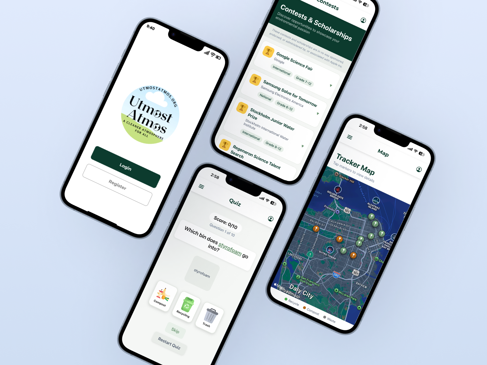
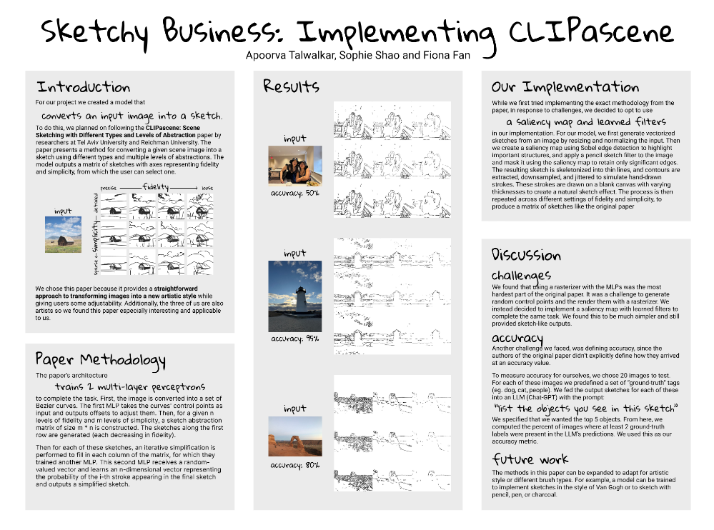
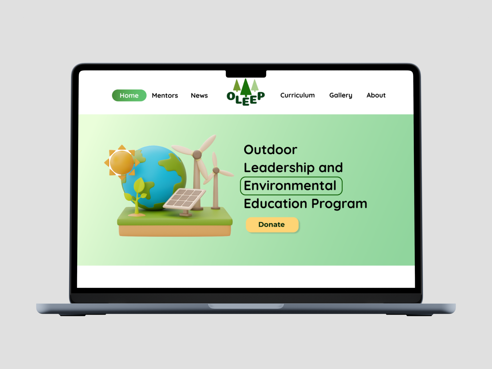
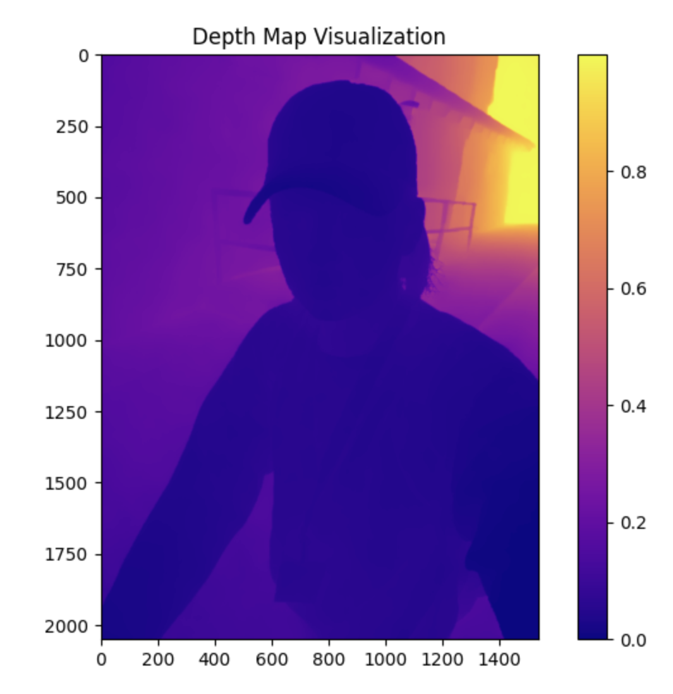

Utmost Atmos
Co-lead a team of 6 to build a nonprofit initiative app connecting students with volunteer and scholarship opportunities, while helping them track and report nearby waste and recycling resources.
Applied Math-Computer Science
Curious about people.
Excited by technology.
Obsessed with making the two work better together.

Co-lead a team of 6 to build a nonprofit initiative app connecting students with volunteer and scholarship opportunities, while helping them track and report nearby waste and recycling resources.
Implemented CLIPasence, a generative computer vision pipeline that converts photos into customizable pencil sketches. Built a saliency-driven pipeline with two custom MLPs to control fidelity and simplicity, then evaluated results by testing whether LLMs could correctly identify objects in the generated sketches.


I was one of three designers and also served as a developer for the Outdoor Leadership and Environmental Education Program website. We conducted UX research and user surveys to identify user pain points in their existing web presence and revamped the old website using React/Next.js.
We sought to achieve a portrait mode filter in two different ways: stereo vision and machine learning. In comparing our results, we aimed to generate a better understanding of the relative merits of each approach and the factors that influence performance in each case.
